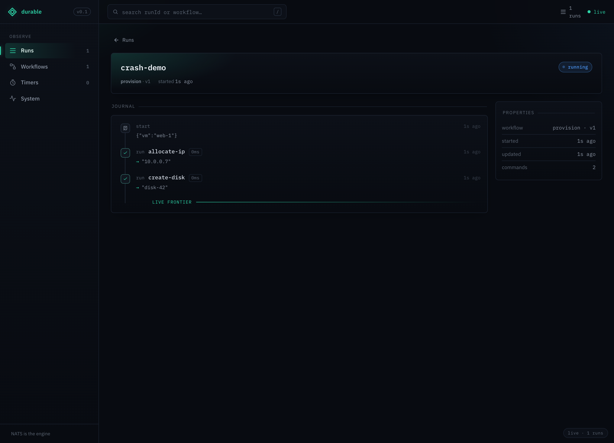
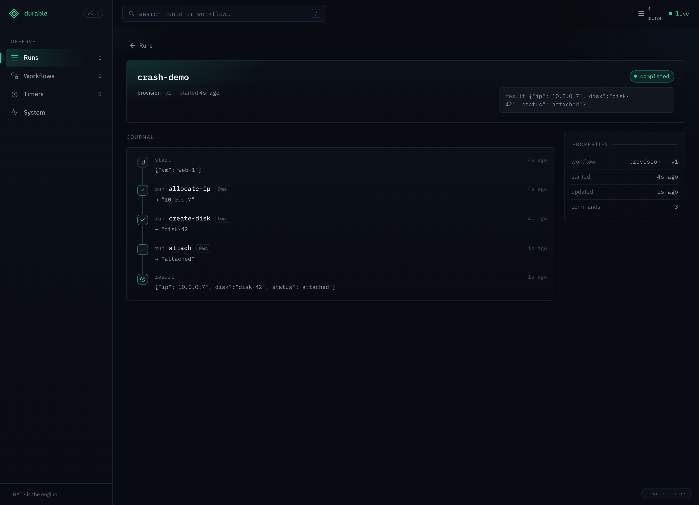

This is the headline of durable execution: a workflow survives a crash by replaying its journal.
Completed steps are returned from the log — their code is not run again — and the workflow resumes
from exactly where it stopped. No checkpoint code, no special framework — just ctx.run.
We'll prove it the most convincing way there is: run a workflow, kill it mid-flight, then let a fresh worker finish it — and watch the console show which steps replayed vs. re-ran.
Haven't met the dashboard or the
ctx.*surface yet? Start with the UI tour and the Anatomy walkthrough.
#The demo
A provision workflow with three durable steps. Each step's function logs only when it actually
executes, so the console can't lie about what replayed:
tsconst provision = defineWorkflow("provision", async (ctx, input: { vm: string }) => {
console.log(`→ workflow entered for ${input.vm}`); // the body runs top-to-bottom on EVERY incarnation
const ip = await ctx.run("allocate-ip", () => {
console.log(" ⚡ allocate-ip EXECUTED");
return "10.0.0.7";
});
const disk = await ctx.run("create-disk", () => {
console.log(" ⚡ create-disk EXECUTED");
return "disk-42";
});
if (process.env.CRASH === "1") {
console.log(" ✗ CRASH — the worker dies here, before 'attach'");
process.exit(1); // a real process death, mid-run
}
const status = await ctx.run("attach", () => {
console.log(" ⚡ attach EXECUTED");
return "attached";
});
return { ip, disk, status };
});
(The full runnable file is examples/crash-replay.ts.)
#Phase 1 — run it, crash it
shnats-server -js & CRASH=1 DE_RUN_ID=crash-demo NATS_URL=nats://127.0.0.1:4222 npm run example:crash-replay
textstarted provision crash-demo → workflow entered for web-1 ⚡ allocate-ip EXECUTED ⚡ create-disk EXECUTED ✗ CRASH — the worker dies here, before 'attach'
Two steps ran and were journaled; then the worker process died (process.exit(1)) before it
ever reached attach. Open crash-demo in the dashboard and you can see exactly that — the journal
stops at create-disk, and the LIVE FRONTIER line marks where the run will pick back up:

The status corner still reads
running— the worker had no chance to update anything on its way down. That's fine: the journal is the source of truth, not the status hint. It stops cleanly aftercreate-disk, and that's precisely where the next worker resumes.
#Phase 2 — a fresh worker resumes
Run the same command again, minus CRASH (same DE_RUN_ID, so it's the same run). A brand-new
process, with no memory of the first:
shDE_RUN_ID=crash-demo NATS_URL=nats://127.0.0.1:4222 npm run example:crash-replay
text→ workflow entered for web-1 ← the body re-runs from the top… ⚡ attach EXECUTED ← …but ONLY attach runs; the first two steps were REPLAYED result: { ip: '10.0.0.7', disk: 'disk-42', status: 'attached' } status: completed
Look at what didn't print. allocate-ip and create-disk produced no EXECUTED line this time —
their results were already in the journal, so they were replayed, not re-executed. Only attach,
the first un-journaled step, actually ran. And the final result —
ts{ ip: "10.0.0.7", disk: "disk-42", status: "attached" }
— stitches together values produced in two different processes: ip and disk from phase 1,
status from phase 2. Every side effect fired exactly once, across a crash. The run is now
completed:

#What just happened
de.journal.crash-demo
├─ start {vm:"web-1"} ┐
├─ allocate-ip → "10.0.0.7" │ written in phase 1
├─ create-disk → "disk-42" ┘ …then the worker crashed
├─ attach → "attached" ┐ written in phase 2 (a fresh worker)
└─ result → {ip, disk, status} ┘ …replaying the first two, running only attach- The journal on
crash-demo's subject is the single source of truth. Phase 1 appendedstart+ two completed steps, then died without a terminal entry. - When phase 2's worker picked the run back up (the work item is redelivered once the crashed worker's
ack lease expires), it loaded that journal and re-ran the function from the top — but every
ctx.runwhose result was already recorded returned the recorded value without calling its function. The first step without a result,attach, is the live frontier; it ran, and the workflow completed. - That's exactly-once state, at-least-once effects: each
ctx.runbody fired once here. (Under a rarer overlap — say a worker that hangs past the ack-extension cap while its step is genuinely in-flight — a step can run more than once, which is why non-idempotent effects should key onctx.key(). The worker's ack-progress heartbeats and the default-on run lease make that overlap rare, never impossible.)
This is the entire value proposition, and notice there was nothing special in the code to get it —
no save/restore, no state machine. You wrote a plain async function; ctx.run did the rest.
Try a variation. Instead of
process.exit, kill the worker while it's parked on actx.awaitorctx.sleep(Ctrl-C it), then restart — same outcome: it resumes from the journal. Theorderexample is set up for exactly this (DE_RUN_ID=<id>).
#How these shots are made
sh# with NATS up and the UI server running (:8088 or :8099):
CRASH=1 DE_RUN_ID=crash-demo npm run example:crash-replay # phase 1
cd apps/ui && RUN=crash-demo SHOT=crash-replay-before bun run capture:run
DE_RUN_ID=crash-demo npm run example:crash-replay # phase 2
cd apps/ui && RUN=crash-demo SHOT=crash-replay-after bun run capture:run
See apps/ui/scripts/capture-run.ts.
More: the UI tour · the Anatomy of a workflow · the model in
HOW-IT-WORKS.md and DESIGN.md.